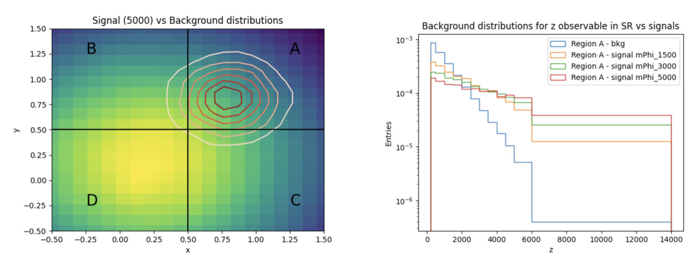
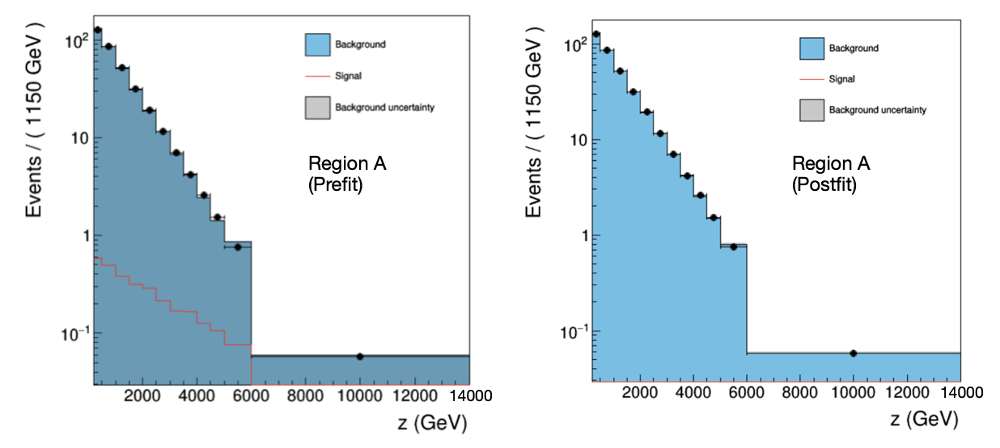
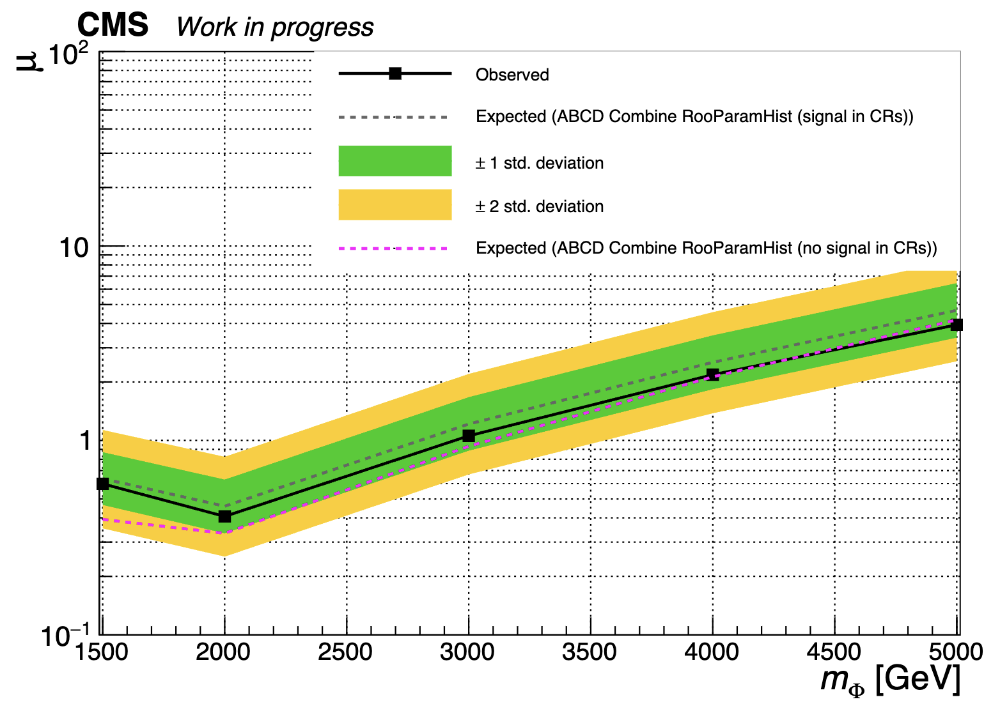

combine_tutorial_ABCD_rooParametricHist
The following is a tutorial on how to use the RooParamertricHist class from Combine to perform an ABCD-like background estimation method.
Getting started
To get started, you should have a working setup of Combine, please follow the instructions from the home page. Make sure to use the latest recommended release.
Now let's move to the working directory for this tutorial which contains all of the inputs and scripts needed to run the ABCD method with RooParametricHist exercise:
cd $CMSSW_BASE/src/HiggsAnalysis/CombinedLimit/data/tutorials/abcd_rooparametrichist_exercise
Introduction
The goal of this tutorial is to exemplify the usage of RooParametricHist in Combine to implement a bin-by-bin ABCD method.
In this tutorial we will work with a toy example that could resemble a real physics analysis case. We consider the search for a BSM particle \(\Phi\) with a mass between 1500 and 5000 GeV, that results in an excess in the tails of an observable \(z\) (for example, \(p_{T,\mathrm{miss}}\)). We assume that we have found two independent discriminating features \(x\) and \(y\) that can be used to construct the ABCD plane (the regions A,B,C,D will be defined by selecting regions in \(x,y\)), and we assume that \(z\) is independent of these two features. In this way, binning the variable \(z\) in the same way in the regions A,B,C,D, per-bin transfer factors in the \(z\) variable can be derived with the ABCD method to obtain the estimate of the background in the signal region. In our example, we will generate a set of pseudodata from our background-only model, and then the background will be estimated from these data from the control regions B,C,D and compared to data in the Signal Region A.
The tutorial has 4 main parts:
- Generate input data
- Create RooParametricHist for ABCD method
- Prepare Combine datacards
- Run fit
- Produce limits
Generate input data
The histograms for the \(z\) observable in the different regions A,B,C,D can be produced using the produce_input_histograms_and_analyse.py script in utils/produce_input_histograms_and_analyse.py. In the script the expected rates for different signal hypotheses (as a function of the \(\Phi\) mass \(m_{\Phi} \in \{1500, 2000, 3000, 4000, 5000 \}\) GeV) and the background yields are specified, as well as the distributions in \(x,y,z\) for the signals and backgrounds. In the following steps of the tutorial, we will just consider one of the mass points generated, \(m_{\Phi} = 1500\) GeV, but the same analysis can be run separately on other mass points. In the \(x-y\) plane, the signal and the background are assumed to be normally distributed, with the background centred at \((0,2,0.2)\), while the signal is centred in the upper-right corner of the plane (\(x,y>0.5\)). For the \(z\) feature, the background and the signal distributions are sampled from an exponential function. In the case of the signal, the tails of the exponential get enhanced as we increase the mass parameter \(m_{\Phi}\).

The ABCD boundaries are chosen in the example to be \((0.5,0.5)\). A is defined as the signal region, while the others are control regions used for the estimation of the background. From the example provided, the signal contamination in the control regions is expected to be low, and the non-closure of the background estimation to be small. The histograms for the different regions are saved in separate root files for each signal hypothesis and total background.
To generate your own input data, run the following command in the terminal
python3 utils/produce_input_histograms_and_analyse.py
Create RooParametricHist objects for the ABCD method
In order to prepare the datacards for our ABCD method we will need to pass the histograms of our data in the A, B, C, and D regions to the datacard to be read in by Combine.
Moreover, we will need to relate the bins of our signal region A \(N_{A}^{bin,i}\) to the bins of the control regions \(N_{B/C/D}^{bin,i}\) via the ABCD method formula \(N_{A}^{bin,i} = N_{B}^{bin,i} \cdot TF^{bin,i}\), where the transfer factor is \(TF^{bin,i} = N_{C}^{bin,i}/N_{D}^{bin,i}\). To achieve our goal, we can use the RooParametricHist object implemented in Combine (for further documentation look here).
The RooParametricHist is a custom implementation within the ROOT framework, specifically designed for handling parametric histograms in a way that integrates with RooFit. The idea is that RooParametricHist allows to define histograms as PDFs where each bin can be either a RooRealVar or a RooFormulaVar. This will allow us to relate each bin of our signal region histogram A with the corresponding one of the control regions via the ABCD method formula.
A RooParamtricHist object can be initialized as follows:
RooParametricHist parametric_hist("paramtric_hist", "Parametric Hist",variable,roo_arg_list_bins,data_th1)
variable is a RooRealVar defining the observable which is being binned, roo_arg_list_bins is a RooArgList containing bins defined as RooRealVar or RooFormulaVar and data_th1 is a TH1 used to initialize the RooParametricHist bin boundaries. It is also possible to define a normalization parameter for the parametric histogram as follows,
RooAddition parametric_hist_norm("paramtric_hist_norm","Total Number of events for Parametric Hist",roo_arg_list_bins)
This normalization parameter is relevant for our ABCD method since we would like to know also the total predicted background yield in our Signal Region.
In the following we describe how to build parametric histograms for our ABCD method regions and how to construct the RooWorskpace which can be referred to in the Combine datacard.
Prepare Combine datacards
fFor each signal hypothesis, 4 datacards can be built using the input histograms, one for each region of the ABCD plane. Examples of the templates for the datacards (for a signal mass point at 1500 GeV) can be found in the following. All the example datacards are stored in the directory sgn_CRs in $CMSSW_BASE/src/HiggsAnalysis/CombinedLimit/data/tutorials/abcd_rooparametrichist_exercise/datacards/. We consider for now the datacards stored in the directory sgn_CRs, for which the signal is present in the control regions.
Let's take as an example the cards for the \(m_{\Phi} = 1500\) GeV in the directory $CMSSW_BASE/src/HiggsAnalysis/CombinedLimit/data/tutorials/abcd_rooparametrichist_exercise/datacards/sgn_CRs/mPhi1500/,
Datacard Region A (Signal Region)
imax * number of bins
jmax * number of processes minus 1
kmax * number of nuisance parameters
-----------------------------------------------------------------------------------
shapes data_obs A param_ws.root wspace:data_obs_A
shapes Bkg A param_ws.root wspace:bkg_A
shapes mPhi_1500 A param_ws.root wspace:mPhi_1500_A
-----------------------------------------------------------------------------------
bin A
observation -1
-----------------------------------------------------------------------------------
bin A A
process Bkg mPhi_1500
process 1 0
rate 1 -1
-----------------------------------------------------------------------------------
lumi lnN - 1.0160000000
BkgRate lnN 1.05 -
Datacard Region B
imax * number of bins
jmax * number of processes minus 1
kmax * number of nuisance parameters
-----------------------------------------------------------------------------------
shapes data_obs B param_ws.root wspace:data_obs_B
shapes Bkg B param_ws.root wspace:bkg_B
shapes mPhi_1500 B param_ws.root wspace:mPhi_1500_B
-----------------------------------------------------------------------------------
bin B
observation -1
-----------------------------------------------------------------------------------
bin B B
process Bkg mPhi1500
process 1 0
rate 1 -1
-----------------------------------------------------------------------------------
lumi lnN - 1.0160000000
Datacard Region C
imax * number of bins
jmax * number of processes minus 1
kmax * number of nuisance parameters
-----------------------------------------------------------------------------------
shapes data_obs C param_ws.root wspace:data_obs_C
shapes Bkg C param_ws.root wspace:bkg_C
shapes mPhi_1500 C param_ws.root wspace:mPhi_1500_C
-----------------------------------------------------------------------------------
bin C
observation -1
-----------------------------------------------------------------------------------
bin C C
process Bkg mPhi1500
process 1 0
rate 1 -1
-----------------------------------------------------------------------------------
lumi lnN - 1.0160000000
Datacard Region D
imax * number of bins
jmax * number of processes minus 1
kmax * number of nuisance parameters
-----------------------------------------------------------------------------------
shapes data_obs D param_ws.root wspace:data_obs_D
shapes Bkg D param_ws.root wspace:bkg_D
shapes mPhi_1500 D param_ws.root wspace:mPhi_1500_D
-----------------------------------------------------------------------------------
bin D
observation -1
-----------------------------------------------------------------------------------
bin D D
process Bkg mPhi1500
process 1 0
rate 1 -1
-----------------------------------------------------------------------------------
lumi lnN - 1.0160000000
For each datacard, we have assigned a systematic uncertainty on the integrated luminosity of 1.6% for the signal processes, and an overall systematic of 5% to background rate in the SR, to account for the non-closure of the method.
Notice that each datacard for each region has a shapes section for the observed data data_obs, for the background Bkg and for the signal. The signal and data shapes are stored in a workspace wspace. The background shapes are stored as RooParametricHist objects. In the following we show how to construct the workspace.
We follow the main steps implemented in a working code to create the workspace create_workspace.py in $CMSSW_BASE/src/HiggsAnalysis/CombinedLimit/data/tutorials/abcd_rooparametrichist_exercise/utils/.
First, we create a RooWorkspace object then, using the function __get_histograms_regions, read the input histograms from the A,B,C,D regions and import them as RooDataHist objects in the workspace.
Import histograms in workspace for signal and observed data
#Output file and workspace
#Here we create a TFile where to store the workspace
output_file_ws = ROOT.TFile(card_output_directory+"param_ws.root","RECREATE")
ws = RooWorkspace("wspace","wspace")
#Define a RooRealVar for the observable z to fit
variable_z = RooRealVar( "z", "z", 200, 14000, "GeV")
#Getting histograms for observed data saved in input ROOT file as TH1F for all the regions
histA_obs , histB_obs, histC_obs, histD_obs = __get_histograms_regions("bkg", input_file_bkg)
#Save TH1F histograms for data in RooDataHist for all the regions.
#RooDataHist can be initialized using a RooArgList with the observable to use, the TH1F for a given region and weight=1
histData_A = RooDataHist("data_obs_A", "Obs Data region A", RooArgList(variable_z), histA_obs, 1.)
histData_B = RooDataHist("data_obs_B", "Obs Data region B", RooArgList(variable_z), histB_obs, 1.)
histData_C = RooDataHist("data_obs_C", "Obs Data region C", RooArgList(variable_z), histC_obs, 1.)
histData_D = RooDataHist("data_obs_D", "Obs Data region D", RooArgList(variable_z), histD_obs, 1.)
#Import data in workspace
getattr(ws, "import")(histData_A, RooFit.Rename("data_obs_A"))
getattr(ws, "import")(histData_B, RooFit.Rename("data_obs_B"))
getattr(ws, "import")(histData_C, RooFit.Rename("data_obs_C"))
getattr(ws, "import")(histData_D, RooFit.Rename("data_obs_D"))
#Save the signals in RooDataHist
histA_sgn , histB_sgn, histC_sgn, histD_sgn = __get_histograms_regions("sgn", input_file_sgn)
histSgn_A = RooDataHist(signal+"_A", "Sgn Data region A", RooArgList(variable_z), histA_sgn, 1.)
histSgn_B = RooDataHist(signal+"_B", "Sgn Data region B", RooArgList(variable_z), histB_sgn, 1.)
histSgn_C = RooDataHist(signal+"_C", "Sgn Data region C", RooArgList(variable_z), histC_sgn, 1.)
histSgn_D = RooDataHist(signal+"_D", "Sgn Data region D", RooArgList(variable_z), histD_sgn, 1.)
#Import signals in workspace
getattr(ws, "import")(histSgn_A, RooFit.Rename(signal+"_A"))
getattr(ws, "import")(histSgn_B, RooFit.Rename(signal+"_B"))
getattr(ws, "import")(histSgn_C, RooFit.Rename(signal+"_C"))
getattr(ws, "import")(histSgn_D, RooFit.Rename(signal+"_D"))
For the B,C,D regions, we create a RooParametricHist object, storing the content of the background bins in B,C,D as RooRealVar,
Create RooParametricHist for control regions background templates
#Here we define the background histograms from "data" (which in our case is equal to the background)
#They will be used to build the parametric histograms we use for modelling the background
histA_pr , histB_pr, histC_pr, histD_pr = __get_histograms_regions("bkg", input_file_bkg)
#Save in RooArgList the content of the bins of histB_pr to define the RooParametricHist for the B region
process_B_region_bins = RooArgList()
process_B_region_bins_list = []
#Save in RooArgList the content of the bins of histC_pr to define the RooParametricHist for the C region
process_C_region_bins = RooArgList()
process_C_region_bins_list = []
#Save in RooArgList the content of the bins of histD_pr to define the RooParametricHist for the D region
process_D_region_bins = RooArgList()
process_D_region_bins_list = []
#Add yields for each bin for the RooParametricHist in the B Region
#each bin is defined as a RooRealVar initialized at the nominal bin content, and with a range between 0 and 2 times the nominal rate
for i in range(1,histB_obs.GetNbinsX()+1):
bin_B_i = RooRealVar("Bkg_B_region_bin_"+str(i),"Background yield in control region B bin " + str(i),histB_obs.GetBinContent(i),0.,2.0*histB_obs.GetBinContent(i))
process_B_region_bins_list.append(bin_B_i)
process_B_region_bins.add(process_B_region_bins_list[i-1])
#Add yields for each bin for the RooParametricHist in the C Region
#each bin is defined as a RooRealVar initialized at the nominal bin content, and with a range between 0 and 2 times the nominal rate
for i in range(1,histC_obs.GetNbinsX()+1):
bin_C_i = RooRealVar("Bkg_C_region_bin_"+str(i),"Background yield in control region C bin " + str(i),histC_obs.GetBinContent(i),0.,2.0*histC_obs.GetBinContent(i))
process_C_region_bins_list.append(bin_C_i)
process_C_region_bins.add(process_C_region_bins_list[i-1])
#Add yields for each bin for the RooParametricHist in the D Region
#each bin is defined as a RooRealVar initialized at the nominal bin content, and with a range between 0 and 2 times the nominal rate
for i in range(1,histD_obs.GetNbinsX()+1):
bin_D_i = RooRealVar("Bkg_D_region_bin_"+str(i),"Background yield in control region D bin " + str(i),histD_obs.GetBinContent(i),0.,2.0*histD_obs.GetBinContent(i))
process_D_region_bins_list.append(bin_D_i)
process_D_region_bins.add(process_D_region_bins_list[i-1])
#Define the parametric histogram for control region B.
#Here we consider the B region to be the transfering region, so the region for which each bin content will be multiplied by a transfer factor (determined by C, D yields)
#The RooParametricHist is initalized giving as input the observable, the RooArgList of the bins previously built and a template TH1F.
param_hist_B_region = RooParametricHist("bkg_B", "Background PDF in B region",variable_z,process_B_region_bins,histB_pr)
#Here we define the total normalization for the RooparametricHist in the B region
param_Bkg_B_norm = RooAddition("bkg_B"+"_norm","Total Number of events from background in control region B",process_B_region_bins)
#Here we import the the parametric histogram and the normalization in our workspace
getattr(ws, "import")(param_hist_B_region, RooFit.Rename("bkg_B"))
getattr(ws, "import")(param_Bkg_B_norm, RooFit.Rename("bkg_B"+"_norm"),RooFit.RecycleConflictNodes())
#Define the parametric histogram for control region C.
#The RooParametricHist is initalized giving as input the observable, the RooArgList of the bins previously built and a template TH1F.
param_hist_C_region = RooParametricHist("bkg_C", "Background PDF in C region",variable_z,process_C_region_bins,histC_pr)
#Here we define the total normalization for the RooparametricHist in the C region
param_Bkg_C_norm = RooAddition("bkg_C"+"_norm","Total Number of events from background in control region C",process_C_region_bins)
#Here we import the the parametric histogram and the normalization in our workspace
getattr(ws, "import")(param_hist_C_region, RooFit.Rename("bkg_C"))
getattr(ws, "import")(param_Bkg_C_norm, RooFit.Rename("bkg_C"+"_norm"),RooFit.RecycleConflictNodes())
#Define the parametric histogram for control region D.
param_hist_D_region = RooParametricHist("bkg_D", "Background PDF in D region",variable_z,process_D_region_bins,histD_pr)
#Here we define the total normalization for the RooparametricHist in the D region
param_Bkg_D_norm = RooAddition("bkg_D"+"_norm","Total Number of events from background in control region D",process_D_region_bins)
#Here we import the the parametric histogram and the normalization in our workspace
getattr(ws, "import")(param_hist_D_region, RooFit.Rename("bkg_D"))
getattr(ws, "import")(param_Bkg_D_norm, RooFit.Rename("bkg_D"+"_norm"),RooFit.RecycleConflictNodes())
For the signal region A, we create a RooParametricHist with each content represented by a RooFormulaVar object that relates the C,D,B region yields to the yield in region A via the ABCD formula.
Create RooParametricHist for SR background template
#Relate the signal region (A) to control region B via transfer factors
#Define RooArgList for expected yields in region A after applying transfer factors
process_AB_region_bins = RooArgList()
#Define list for transfer factors
TF_list = []
#Define list for expected yields in region A after applying transfer factors
process_AB_region_bins_list = []
#Compute per-bin transfer factor
#Loop over the bins of the transfering region B, and compute the transfer factors as C/D
for i in range(1,histB_pr.GetNbinsX()+1):
#Define transfer factor as a RooFormulaVar. Use the method .obj for RooWorkSpace to retrieve the yield for a given bin and region
TF_i = RooFormulaVar("TF"+str(i),"Transfer factor C/D bin " + str(i),"(@0/@1)",RooArgList(ws.obj("Bkg_C_region_bin_"+str(i)) , ws.obj("Bkg_D_region_bin_"+str(i)) ))
TF_list.append(TF_i)
#Compute the expected yield in the signal region as A = B * TF. This will be used to initialise the RooParametricHist in the Signal Region
bin_AB_i = RooFormulaVar("Bkg_AB_region_bin_"+str(i),"Background yield in SR A region bin " + str(i), "@0*@1", RooArgList(TF_i, ws.obj("Bkg_B_region_bin_"+str(i)) ))
process_AB_region_bins_list.append(bin_AB_i)
process_AB_region_bins.add(process_AB_region_bins_list[i-1])
#Create parametric histogram for signal region (A) using bin contents saved in process_AB_region_bins
param_hist_A_region = RooParametricHist("bkg_A", "Background PDF in A region",variable_z,process_AB_region_bins,histB_pr)
#Define total normalization parameter
param_bkg_A_norm = RooAddition("bkg_A"+"_norm","Total Number of events from background in A region",process_AB_region_bins)
#Store in Workspace
getattr(ws, "import")(param_hist_A_region, RooFit.Rename("bkg_A"))
getattr(ws, "import")(param_bkg_A_norm, RooFit.Rename("bkg_A"+"_norm"),RooFit.RecycleConflictNodes())
To run the workspace creation script, use the following command,
python3 utils/create_workspace.py -m 1500
where -m is the flag for the mass point you want to run the script on. The script will use the histograms stored in generated_histograms in the tutorial directory.
After running the script, the workspace will be saved in example_analysis/datacards/. To create the datacards automatically fatching the correct workspace, run,
python3 utils/create_datacards.py -m 1500
The datacards will be created in the directory example_analysis/datacards/mPhi1500/ inside the tutorial directory. Now we need to move into the directory where the datacards are stored,
cd example_analysis/datacards/mPhi1500/
The datacards can be combined using the usual command:
combineCards.py mPhi_1500_*2018*.txt > combined_mPhi_1500_2018.txt
Datacard with A,B,C,D regions combined
Combination of mPhi1500_Catany_2018_CR_B.txt mPhi1500_Catany_2018_CR_C.txt mPhi1500_Catany_2018_CR_D.txt mPhi1500_Catany_2018_SR.txt
imax 4 number of bins
jmax 1 number of processes minus 1
kmax 2 number of nuisance parameters
----------------------------------------------------------------------------------------------------------------------------------
shapes Bkg ch1 param_ws.root wspace:bkg_B
shapes data_obs ch1 param_ws.root wspace:data_obs_B
shapes mPhi_1500 ch1 param_ws.root wspace:mPhi_1500_B
shapes Bkg ch2 param_ws.root wspace:bkg_C
shapes data_obs ch2 param_ws.root wspace:data_obs_C
shapes mPhi_1500 ch2 param_ws.root wspace:mPhi_1500_C
shapes Bkg ch3 param_ws.root wspace:bkg_D
shapes data_obs ch3 param_ws.root wspace:data_obs_D
shapes mPhi_1500 ch3 param_ws.root wspace:mPhi_1500_D
shapes Bkg ch4 param_ws.root wspace:bkg_A
shapes data_obs ch4 param_ws.root wspace:data_obs_A
shapes mPhi_1500 ch4 param_ws.root wspace:mPhi_1500_A
----------------------------------------------------------------------------------------------------------------------------------
bin ch1 ch2 ch3 ch4
observation -1 -1 -1 -1
----------------------------------------------------------------------------------------------------------------------------------
bin ch1 ch1 ch2 ch2 ch3 ch3 ch4 ch4
process mPhi_1500 Bkg mPhi_1500 Bkg mPhi_1500 Bkg mPhi_1500 Bkg
process 0 1 0 1 0 1 0 1
rate -1 1 -1 1 -1 1 -1 1
----------------------------------------------------------------------------------------------------------------------------------
BkgRate lnN - - - - - - - 1.05
lumi lnN 1.016 - 1.016 - 1.016 - 1.016 -
Run Fit
From the combined datacard for all the regions, one can run the usual fit diagnostics as follows,
combine -M FitDiagnostics combined_mPhi_1500_2018.txt -m 1500 --saveShapes --saveWithUncertainties --saveNormalizations
Results FitDiagnostics
--- FitDiagnostics ---
Best fit r: 1.25367e-06 -1.25367e-06/+0.278001 (68% CL)
Using the output fitDiagnosticsTest.root, one can run the script $CMSSW_BASE/src/HiggsAnalysis/CombinedLimit/test/mlfitNormsToText.py to get the predictions for the normalizations:
python3 $CMSSW_BASE/src/HiggsAnalysis/CombinedLimit/test/mlfitNormsToText.py fitDiagnosticsTest.root
Normalizations predictions
Channel Process Pre-fit S+B Fit B-Only Fit
---------------------------------------------------------------------------------------------------------------------------------
ch1 mPhi_1500 594.749 0.001 0.000
ch2 mPhi_1500 605.251 0.001 0.000
ch3 mPhi_1500 245.161 0.000 0.000
ch4 mPhi_1500 1541.786 0.002 0.000
ch1 Bkg 236222.924 236225.827 236225.566
ch2 Bkg 235703.859 235706.772 235706.507
ch3 Bkg 381479.390 381476.654 381476.592
ch4 Bkg 145963.042 146872.863 146873.546
ch1 total 236817.673 236225.828 236225.566
ch1 total_signal 594.749 0.001 0.000
ch1 total_background 236222.924 236225.827 236225.566
ch2 total 236309.110 235706.773 235706.507
ch2 total_signal 605.251 0.001 0.000
ch2 total_background 235703.859 235706.772 235706.507
ch3 total 381724.551 381476.654 381476.592
ch3 total_signal 245.161 0.000 0.000
ch3 total_background 381479.390 381476.654 381476.592
ch4 total 147504.828 146872.865 146873.546
ch4 total_signal 1541.786 0.002 0.000
ch4 total_background 145963.042 146872.863 146873.546
Moreover, you can run the script in $CMSSW_BASE/src/HiggsAnalysis/CombinedLimit/data/tutorials/longexercise/postFitPlot.py to get pre-fit and post-fit plots in the signal region (in the combined datacard ch4):
python3 $CMSSW_BASE/src/HiggsAnalysis/CombinedLimit/data/tutorials/longexercise/postFitPlot.py --input_file fitDiagnosticsTest.root --shape_type <shapes_type> --region <region>
where the argument <shapes_type> can be shapes_prefit, shapes_fit_b or shapes_fit_s to obtain the prefit, background-only fit or signal+background fit plots. The argument <region> specifies the region, which should be ch4 for the signal region A.

Produce limits
Limits can be computed from the combined datacard for all the regions using the following command (in case of asymptotic limits),
combine -M AsymptoticLimits combined_mPhi_1500_2018.txt -m 1500 2>&1 | tee asymp_limits_mPhi_1500_2018.txt
Results AsymptoticLimits
-- AsymptoticLimits ( CLs ) --
Observed Limit: r < 0.5986
Expected 2.5%: r < 0.3532
Expected 16.0%: r < 0.4662
Expected 50.0%: r < 0.6367
Expected 84.0%: r < 0.8702
Expected 97.5%: r < 1.1325
Both the observed (from nominal Monte Carlo) and the expected limits can be computed for each mass point.
The same exercise can be repeated generating a workspace where the control regions are depleted from the signal (see datacards in $CMSSW_BASE/src/HiggsAnalysis/CombinedLimit/data/tutorials/abcd_rooparametrichist_exercise/datacards/no_sgn_CRs/), and re-running the limits. This should give a hint of how much the signal contamination in the control regions is impacting the limits. If you want to generate the workspace and the cards where the signal is removed from the CRs, just run the scripts create_workspace.py and create_datacards.py with the flag --deplete_crs_from_signal.
The analysis illustrated can be run for multiple mass points, and the typical exclusion plot can be produced similar to the one below.

As we can see, the expected limit without signal in the control regions is better when compared to the one taking into account the signal, showing that in this example there is an impact from the signal contamination of the control regions affecting the final sensitivity.